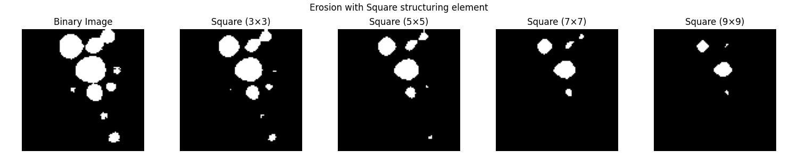

Note
Go to the end to download the full example code.
Binary Image Operations
In this section, we will learn some basic operations that are usually done on a binary image, which I think are especially helpful for processing fluorescence images.
To demonstrate the concept, we will use an 8x8 binary image.
import numpy as np
import matplotlib.pyplot as plt
import matplotlib.patheffects as path_effects
from skimage.morphology import binary_erosion, binary_dilation, disk
binary_image = np.array([[0, 0, 0, 0, 0, 0, 0, 0],
[0, 0, 0, 1, 1, 0, 0, 0],
[0, 0, 1, 1, 1, 1, 0, 0],
[0, 1, 1, 1, 1, 1, 1, 0],
[0, 1, 1, 1, 1, 1, 1, 0],
[0, 0, 1, 1, 1, 1, 0, 0],
[0, 0, 0, 1, 1, 0, 0, 0],
[0, 0, 0, 0, 0, 0, 0, 0]])
First, let’s create a function that displays the image which has an option that lets you put a pixel value on top of each pixel.
def display_image(ax, img, title, show_value=False):
ax.imshow(img, cmap='gray', vmin=0, vmax=1)
ax.set_title(title)
ax.axis("off")
if show_value:
for row in range(img.shape[0]):
for col in range(img.shape[1]):
text = ax.text(col, row, int(img[row, col]), ha='center', va='center',
fontsize=10, color='black', fontweight='bold')
text.set_path_effects([path_effects.Stroke(linewidth=2, foreground='white'),
path_effects.Normal()])
fig, axes = plt.subplots(1, 2, figsize=(6, 3))
display_image(axes[0], binary_image, "Binary Image")
display_image(axes[1], binary_image, "with Pixel Values", show_value=True)
plt.tight_layout()
plt.show()
Morphological Operations
Morphological operations are used to change the shape (or morphology) of a binary object. The most common ones are erosion and dilation.
As the name suggests, erosion erode a binary object by removing pixels from its outer boundary. Conversely, dilation dilates the object by adding pixels to its outer area.
dilated = binary_dilation(binary_image)
eroded = binary_erosion(binary_image)
# Display original, dilated, and eroded images side by side
fig, axes = plt.subplots(1, 3, figsize=(9, 3))
display_image(axes[0], binary_image, "Original Image", show_value=True)
display_image(axes[1], dilated, "Dilated", show_value=True)
display_image(axes[2], eroded, "Eroded", show_value=True)
plt.tight_layout()
plt.show()
The above operations were done using a single pixel, which means they used a matrix of size 1 ([[1]]). This matrix used for morphological operations is also called a “structuring element”. We can also use a structuring element of a different size, such as a 3×3 matrix, for example.
matrix_3x3 = np.ones((3,3))
print(matrix_3x3)
[[1. 1. 1.]
[1. 1. 1.]
[1. 1. 1.]]
Now, let’s apply erosion using this 3×3 structuring element and compare the results.
eroded_3x3 = binary_erosion(binary_image, matrix_3x3)
# Compare default erosion (1x1) vs erosion with (3x3) structuring element
fig, axes = plt.subplots(1, 3, figsize=(9, 3))
display_image(axes[0], binary_image, "Original Image", show_value=True)
display_image(axes[1], eroded, "Eroded (1×1)", show_value=True)
display_image(axes[2], eroded_3x3, "Eroded (3×3)", show_value=True)
plt.tight_layout()
plt.show()
We can also use structuring element of different shapes
square_3 = np.ones((3,3)) # Square (3x3)
square_5 = np.ones((5,5)) # Square (5x5)
disk_1 = disk(1) # Disk with radius 1
disk_2 = disk(2) # Disk with radius 2
# Display structuring elements
fig, axes = plt.subplots(1, 4, figsize=(8,2))
display_image(axes[0], square_3, "Square (3×3)", show_value=True)
display_image(axes[1], square_5, "Square (5×5)", show_value=True)
display_image(axes[2], disk_1, "Disk (r=1)", show_value=True)
display_image(axes[3], disk_2, "Disk (r=2)", show_value=True)
plt.tight_layout()
plt.show()
Let’s apply erosion on the binary image of our blobs image.
from PIL import Image
# Load the blobs image
blob_path = "images/blobs.jpeg"
blobs = Image.open(blob_path)
blobs = np.array(blobs)
# Convert grayscale image to binary using thresholding
# The threshold value is arbitrary (but not really, can you guess why?)
blobs_bin = blobs > 180
# Apply erosion with square structuring elements (3x3, 5x5, 7x7, 9x9)
fig, axes = plt.subplots(1, 5, figsize=(15,3))
plt.suptitle("Erosion with Square structuring element")
display_image(axes[0], blobs_bin, "Binary Image")
for i, size in enumerate([3, 5, 7, 9]):
eroded_img = binary_erosion(blobs_bin, np.ones((size, size)))
display_image(axes[i+1], eroded_img, f"Square ({size}×{size})")
plt.tight_layout()
plt.show()
# Apply erosion with disk structuring elements (r=1, 2, 3, 4)
fig, axes = plt.subplots(1, 5, figsize=(15,3))
plt.suptitle("Erosion with Disk structuring element")
display_image(axes[0], blobs_bin, "Binary Image")
for i, radius in enumerate([1, 2, 3, 4]):
eroded_img = binary_erosion(blobs_bin, disk(radius)) # Apply erosion
display_image(axes[i+1], eroded_img, f"disk (r={radius})")
plt.tight_layout()
plt.show()
- 
Hint
Can you think of any useful applications of erosion, dilation, or the combination of both?
Logical Operations
You may have heard about logical operations like OR and AND:
True AND False results in False.
True OR False results in True.
Since binary images contain only binary values (0 and 1), we can apply these logical operations to them.
# Convert the binary image to boolean
binary_image = binary_image.astype(bool)
# Show different types of logical operations on the binary image
fig, axes = plt.subplots(1, 6, figsize=(18, 3))
display_image(axes[0], binary_image, "Binary Image (A)")
display_image(axes[1], eroded, "Eroded (B)")
display_image(axes[2], binary_image | eroded, "A | B (OR)")
display_image(axes[3], binary_image ^ eroded, "A ^ B (XOR)")
display_image(axes[4], binary_image & eroded, "A & B (AND)")
display_image(axes[5], ~binary_image, "~A (NOT)")
plt.tight_layout()
plt.show()
So essentially, logical operations on binary images work like this:
OR (`|`) merges both binary images.
XOR (`^`) keeps only the non-overlapping areas.
AND (`&`) keeps only the overlapping regions.
NOT (`~`) inverts the image.
Note
There are different ways to perform logical operations on a binary image. The operators we used so far (|, ^, &, ~) are called bitwise operators. These work correctly for boolean values (True, False). When using integers (0, 1), the result may not be as expected. In such cases, it is better to use numpy.logical operations.
print(~np.array([False, True, True, False]))
print(~np.array([0, 1, 1, 0]))
print(np.logical_not(np.array([0, 1, 1, 0])))
[ True False False True]
[-1 -2 -2 -1]
[ True False False True]
Let’s apply logical operations to the binary image of the blobs and its eroded version.
blobs_eroded = binary_erosion(blobs_bin, disk(1))
fig, axes = plt.subplots(1, 6, figsize=(18, 3))
display_image(axes[0], blobs_bin, "Binary Image (A)")
display_image(axes[1], blobs_eroded, "Eroded (B)")
display_image(axes[2], blobs_bin | blobs_eroded, "A | B (OR)")
display_image(axes[3], blobs_bin ^ blobs_eroded, "A ^ B (XOR)")
display_image(axes[4], blobs_bin & blobs_eroded, "A & B (AND)")
display_image(axes[5], ~blobs_bin, "~A (NOT)")
plt.tight_layout()
plt.show()
We can see that applying erosion followed by the XOR operation gives us the boundary of the object.
Hint
Can you think of any combination of morphological operations and logical operations that might be useful?
See also
Subtract (A - B): The name explains itself, and is similar to XOR (A ^ B) when A >= B.
Add (A + B): Equivalent to OR (A | B).
Total running time of the script: (0 minutes 1.661 seconds)